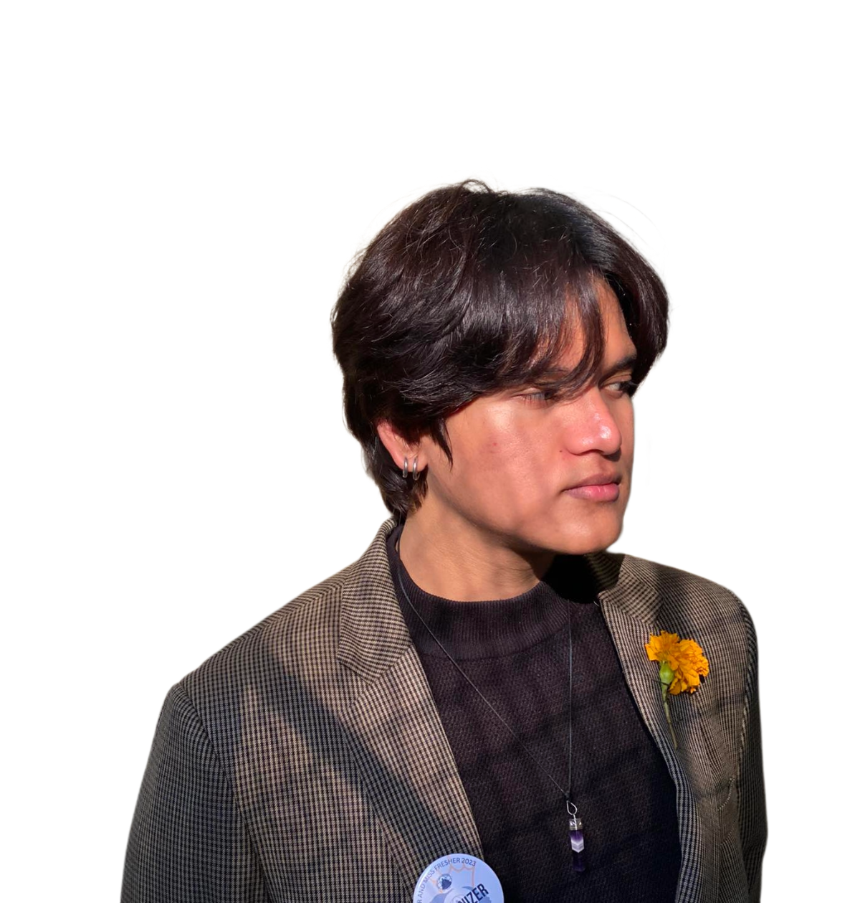

Featured case
Reserved for the project that should hit first.
Pseudo human
Born Aug 11, 2003

brohatzeno / Aryan Karki
I could be more "professional" and "normal", but I choose to stay whimsical and artistic.
Not a resume with better typography
I build interfaces, visuals, and small digital worlds that hold onto personality. The work sits somewhere between clean engineering and a restless sketchbook.
This space is designed like an editorial spread: loud type, intentional empty room, and frames waiting for the projects, photos, notes, and experiments that come next.
Gallery wall / empty for now
A modular wall for projects, writing, interface experiments, sketches, and artifacts. Each frame is empty on purpose until the real pieces are ready.
Reserved for the project that should hit first.
Working rhythm
The workflow is simple: find the human part, sketch the strange part, then tighten everything until it works on real screens.
Who is this for, what should it make easier, and what should it make unforgettable?
Layouts, type, color, motion, and responsive details that make the whole thing feel intentional.
Clean frontend structure, accessible interactions, and performance that stays out of the user's way.
End credits / start here